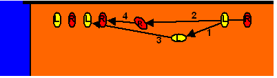

Aktiv - Passiv
Je nach Höhe der Blockspielerin hat sie mehrere Möglichkeiten:

Die Spielerin muss über das Netz und wenn möglich auch noch über den Ball hinübergreifen. Sie klappt mit den Handgelenken nach unten und spielt den Ball aggressiv ins gegnerische Feld.
Die Handgelenke sind gerade oder sogar leicht nach hinten geklappt und werden nicht oder nur leicht gespannt. Dem Ball soll in erster Linie die Wucht genommen werden, er soll im hohen Bogen als geschenkter Ball ins eigenen Feld fliegen um möglichst einfach weitergespielt zu werden.
Einzelblock - Doppelblock
Je nach der Anzahl der Spielerinnen, die gemeinsam zum Block springen, kann man unterteilen in:

Eine Spielerin springt alleine. Das kommt meistens gegen Schnell- oder Kombinationsangriffe vor.

Der Standardblock gegen Hauptangreiferinnen.
Basis (Vorbereitung zum Block)

Die Blockspielerinnen warten gegenüber ihren jeweiligen Angreiferinnen.
Die Außenblockerinnen warten außen nahe der Linie, sie bewegen sich von außen zu ihrem Blockort, die Mittelblockerin schließt auf, gemeinsam wird zum Block gesprungen.
Die Blockspielerinnen warten gegenüber ihren jeweiligen Angreiferinnen.
Wenn die gegnerische Aufspielerin Vorderspielerin ist, ist sie die Angreiferin für die Außenblockspielerin. Die Blockspielerin schützt vor allem die Feldmitte, außen verteidigt die Spielerin auf der Position 5.
Bewegung zum Block

Todo
Blockposition

Den Block stellen. Beim Doppelblock ist immer eine der beiden Spielerinnen für die Festlegung der Position des Blocks zuständig. Die andere Spielerin schließt auf, gemeinsam springen sie zum Block.
Der Block legt die Verteidigungstaktik fest, die Feldverteidgung muss sich am Block orientieren (können)!
Wenn der Block fliegt, also seine Position wärend des Sprungs verändert, ist auch die Feldverteidigung viel schwieriger, da die Spielerinnen nicht auf einander abgestimmt agieren können.
Technik
!
- Augen auf!
Beobachte die Gegnerinnen - versuche sie zu lesen. So kannst du Gutes wiederholen und Fehlerhaftes zumindest bei der nächsten Aktion besser machen. - Beobachte den Ball und deine Gegenspieler genau. Versuche sie zu lesen.
- Stehe in leichter Kniebeuge, die Unterarme sind vorne oben, die Hände gespannt.
- Springe möglichst senkrecht, schiebe die Arme gerade nach vorne oben über das Netz.
- Geblockt wird mit den Händen, nicht mit den Armen.
Wer am Unterarm angeschlagen wird, ist zu weit weg vom Netz oder hat zu wenig weit übergegriffen. Nur ganz selten ist der Gegner so gut oder hat so viel Glück, dass es kein Fehler der Blockspielerin ist. - Vergrößere die Blockfläche durch Spreizen der Finger.
Aber achte auf die kleinen Finger, wenn du sie zu weit zur Seite wegspreizt, kann das sehr weh tun. - Körperspannung halten, sonst fällst du nach vorne.
- Lass die Arme auch bei der Landung lange gestreckt, so kannst du auch bei falschem Timing eine gierige Angreiferin noch passiv blocken.
- Lande beidbeinig, und sei sofort wieder spielbereit (Vorbereiten zum Aufspiel oder Retten des Balls, Lösen zum Angriff ).
- Nicht die Höhe ist entscheidend, sondern das Timing! Je weiter der Angriff vom Netz weg ist, um so später musst du springen.
Für jede Angreiferin gibt es einen optimalen Zeitpunkt - manche schlagen früher (Bsp.: Chinesinnen), manche schlagen verzögert (Bsp.: nach Kurbeln beim Ausholen und andere technische Fehler).